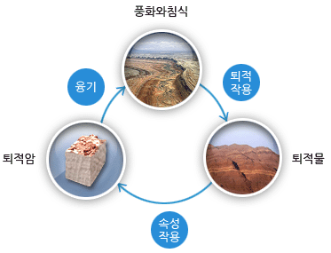
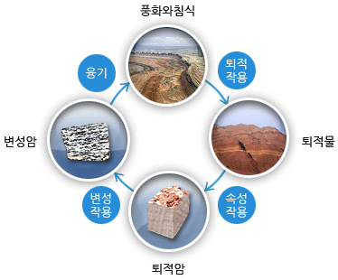
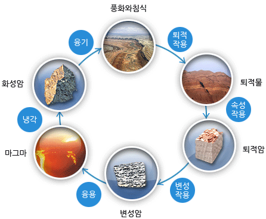
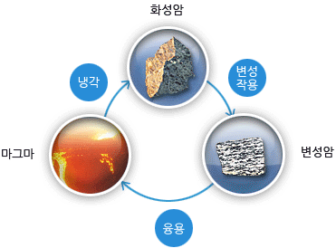

생성원리

사이클별 세부설명
퇴적암-퇴적암 cycle
지표에 노출된 암석덩어리인 산이 풍화와 침식에 의해 운반되고 퇴적작용으로 인하여 퇴적물이 쌓이게 됩니다. 이러한 퇴적물이 속성작용에 의해 굳어져 퇴적암을 형성하게 되고 융기하면 새로운 퇴적암질 산으로 돌아가게 됩니다.

퇴적암-변성암 cycle
또는 이 퇴적암이 주위의 큰 압력과 높은 열에 의해 변성작용을 받으면 변성암으로 변하게 되고 이후 융기하여 지표에 노출되면 변성암질 산을 형성할 수 있습니다.

퇴적암-변성암-화성암 cycle
만약, 이 변성암이 용융되면 마그마로 변하게 되고 결정화 작용에 의해 냉각되면 화성암이 형성될 수 있게 됩니다. 이 화성암이 지각운동에 의해 융기하게 되면 화성암질 산이 형성되게 됩니다.

변성암-화성암 cycle
또한 화성암이 다시 주위의 큰 압력과 높은 열을 받아 변성암으로 변할 수 있고 재차 용융되어 마그마로 되돌아 갈 수도 있습니다.암석은 이와 같은 일련의 과정에 의해 암석 구성물질이 변함으로써 새로운 암석으로 재탄생하게 됩니다.
